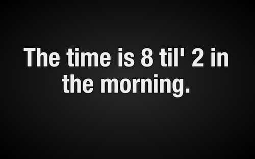

Word Clock
A screensaver that is a clock, and uses words.
No really.
Features
- Is "smart" and will tell you things like... "The time is half past 3 in the morning".
- Changes from light to dark based on whether or not it is daytime or nighttime
- In the last 10 minutes of an hour it switches to say "The time is 9 til' 8 in the evening".
Version 0.1
Download (Mac)Known Issues:
- Has some weirdness when combined with the Fliqo screensaver in the system preferences window... it all works, it just doesn't preview the right screesaver.
- The gnomes that write out the time are confused and thing that evening starts after noon... they are sleepy okay!
- I made this late one night and it's bound to have typo's. Please let me know about them @radpants on twitter.